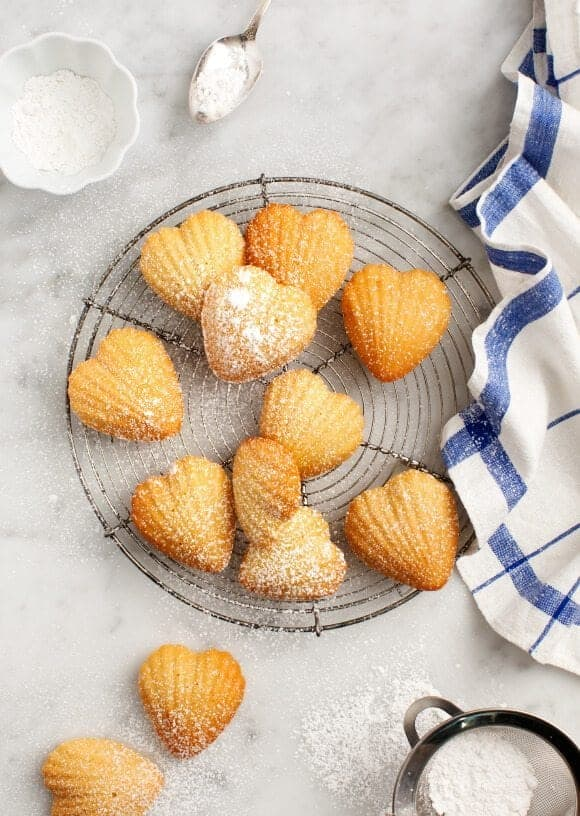
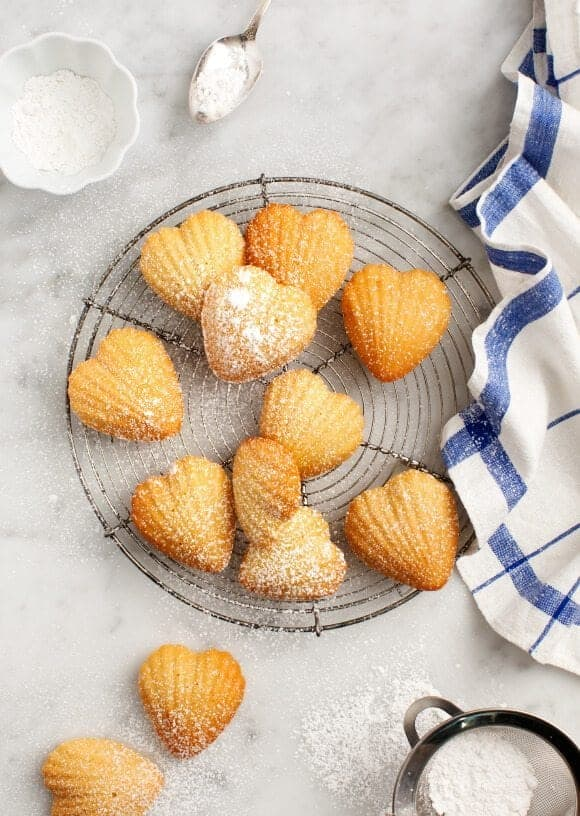
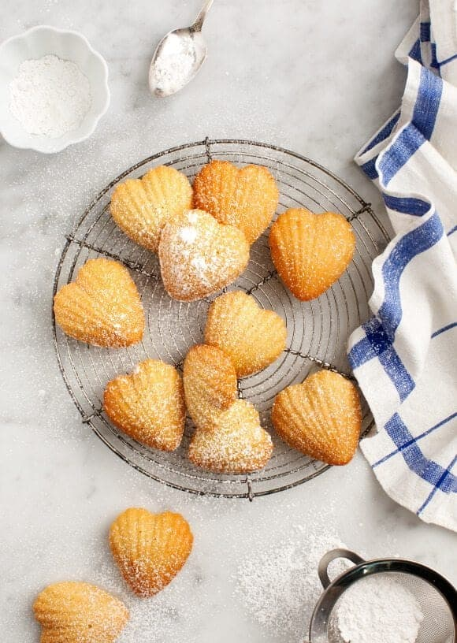

Sample Imagery
 

Madeleines are small French sponge cakes baked in shell-shaped molds with a soft, buttery texture and lightly crisp exterior. Often enjoyed fresh from the oven, they are simple in composition yet refined in presentation.
Source attribution: Sally's Baking Addiction – Madeleines

This site uses a balance of approachable language, detailed explanations of each step, and visual cues to help keep the site easy to follow. Their choice of fonts, images, color theme also contribute to the lightheartedness of the site.
King Arthur Baking provides highly reliable recipes and the site emphasizes technique and accuracy, making it a strong reference for instructional clarity. In terms of design, the site is simple, clearly spaced, and almost rectangularly boxed between each sub category making it easier for users. This site also includes various different madeleine recipes beyond the classic ones.
Slightly different than the previous two, bon appétit's site elevates recipes through confident typography and a more classy color scheme. The layout makes simple recipes feel refined and aspirational rather than purely functional. The site also provides various reviews from previous users which can be helpful.
I was inspired by Apple's site after discussions about their intentional choice of images that guide the users eyes to a specific area of the screen. Additionally, Apple's use of hierarchy, consistent spacing, and color contrast can also translate well to organizing recipe steps and instructions.
Aesop’s website uses minimal typography, muted colors, and generous spacing to create a calm, focused reading experience. The site avoids visual clutter and places emphasis on content and structure, which could inspire a recipe design that feels intentional, clean, and ingredient-focused.
Notion’s website uses rounded edges, soft visual elements, and simple typography as well, which makes the site feel more approachable and casual. This design choice creates a friendly and inviting interface, and could inform a recipe layout that feels easy to use for beginners.